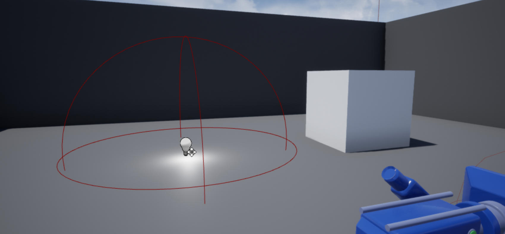

触发区域的灯光切换
接上一节教程，本教程需要注意的是，需要确保第一人称的 Character 是纯净的，即没有《为 Charactor 添加重叠事件》添加的代码，否则触发灯光的开关可能会有冲突。
在本教程中，我们将创建一个灯，当用户进入 actor 的 USphereComponent 时，它会打开或关闭。创建一个新的 C++ 角色类并将其命名为 LightSwitchTrigger 。在头文件中，我们将定义我们的 PointLight、USphereComponent``、Overlap 函数和 ToggleLight 函数。
LightSwitchTrigger.h
#pragma once
#include "CoreMinimal.h"
#include "GameFramework/Actor.h"
#include "LightSwitchTrigger.generated.h"
UCLASS()
class UNREALCPP_API ALightSwitchTrigger : public AActor
{
GENERATED_BODY()
public:
// Sets default values for this actor's properties
ALightSwitchTrigger();
protected:
// Called when the game starts or when spawned
virtual void BeginPlay() override;
public:
// Called every frame
virtual void Tick(float DeltaTime) override;
// declare point light comp
UPROPERTY(VisibleAnywhere, Category = "Light Switch")
class UPointLightComponent* PointLight;
// declare sphere comp
UPROPERTY(VisibleAnywhere, Category = "Light Switch")
class USphereComponent* LightSphere;
// declare light intensity variable
UPROPERTY(VisibleAnywhere, Category = "Light Switch")
float LightIntensity;
// declare overlap begin function
UFUNCTION()
void OnOverlapBegin(class UPrimitiveComponent* OverlappedComp, class AActor* OtherActor, class UPrimitiveComponent* OtherComp, int32 OtherBodyIndex, bool bFromSweep, const FHitResult& SweepResult);
// declare overlap end function
UFUNCTION()
void OnOverlapEnd(class UPrimitiveComponent* OverlappedComp, class AActor* OtherActor, class UPrimitiveComponent* OtherComp, int32 OtherBodyIndex);
// declare ToggleLight function
UFUNCTION()
void ToggleLight();
};
接下来，在 .cpp 中，我们将 `
include "DrawDebugHelpers.h"` 来帮助我们可视化碰撞球体。
#include "LightSwitchTrigger.h"
#include "Components/PointLightComponent.h"
#include "Components/SphereComponent.h"
// include draw debu helpers header file
#include "DrawDebugHelpers.h"
在 LightSwitchTrigger 初始函数中，我们将把光照强度设置为 3000.0f。接下来，我们将添加一个 PointLight 作为我们的 RootComponent 。然后，我们将为触发器球体 的 actor 添加一个USphereComponent(LightSphere），并将其附加到 RootComponent 。然后将 USphereComponent 连接到我们稍后将创建的 Overlap 函数。
设置触发器中的灯光
```cpp ALightSwitchTrigger::ALightSwitchTrigger() { // Set this actor to call Tick() every frame. You can turn this off to improve performance if you don't need it. PrimaryActorTick.bCanEverTick = true;
LightIntensity = 3000.0f;
PointLight = CreateDefaultSubobject<UPointLightComponent>(TEXT("Point Light"));
PointLight->Intensity = LightIntensity;
//PointLight->bVisible = true; 过时
//PointLight->SetVisibleFlag(true);
PointLight->SetVisibility(true);
RootComponent = PointLight;
LightSphere = CreateDefaultSubobject<USphereComponent>(TEXT("Light Sphere Component"));
LightSphere->InitSphereRadius(300.0f);
LightSphere->SetCollisionProfileName(TEXT("Trigger"));
LightSphere->SetupAttachment(RootComponent);
LightSphere->OnComponentBeginOverlap.AddDynamic(this, &ALightSwitchTrigger::OnOverlapBegin);
LightSphere->OnComponentEndOverlap.AddDynamic(this, &ALightSwitchTrigger::OnOverlapEnd);
} ```
在 BeginPlay() 中添加一个与 LightSphere 半径相同的调试球体。
void ALightSwitchTrigger::BeginPlay()
{
Super::BeginPlay();
DrawDebugSphere(GetWorld(), GetActorLocation(), 300.f, 50, FColor::Green, true, -1, 0, 2);
}
创建一个名为 ToggleLight() 的函数，用于切换 PointLight 的可见性。
void ALightSwitchTrigger::ToggleLight()
{
PointLight->ToggleVisibility();
}
接下来，我们将创建两个重叠函数，它们都调用 ToggleLight 函数来切换灯光的可见性。
void ALightSwitchTrigger::OnOverlapBegin(class UPrimitiveComponent* OverlappedComp, class AActor* OtherActor, class UPrimitiveComponent* OtherComp, int32 OtherBodyIndex, bool bFromSweep, const FHitResult& SweepResult)
{
if (OtherActor && (OtherActor != this) && OtherComp)
{
ToggleLight();
}
}
void ALightSwitchTrigger::OnOverlapEnd(class UPrimitiveComponent* OverlappedComp, class AActor* OtherActor, class UPrimitiveComponent* OtherComp, int32 OtherBodyIndex)
{
if (OtherActor && (OtherActor != this) && OtherComp)
{
ToggleLight();
}
}
完整的 cpp 代码如下
#include "LightSwitchTrigger.h"
#include "Components/PointLightComponent.h"
#include "Components/SphereComponent.h"
// include draw debu helpers header file
#include "DrawDebugHelpers.h"
// Sets default values
ALightSwitchTrigger::ALightSwitchTrigger()
{
// Set this actor to call Tick() every frame. You can turn this off to improve performance if you don't need it.
PrimaryActorTick.bCanEverTick = true;
LightIntensity = 3000.0f;
PointLight = CreateDefaultSubobject<UPointLightComponent>(TEXT("Point Light"));
PointLight->Intensity = LightIntensity;
PointLight->bVisible = true;
RootComponent = PointLight;
LightSphere = CreateDefaultSubobject<USphereComponent>(TEXT("Light Sphere Component"));
LightSphere->InitSphereRadius(300.0f);
LightSphere->SetCollisionProfileName(TEXT("Trigger"));
LightSphere->SetupAttachment(RootComponent);
LightSphere->OnComponentBeginOverlap.AddDynamic(this, &ALightSwitchTrigger::OnOverlapBegin);
LightSphere->OnComponentEndOverlap.AddDynamic(this, &ALightSwitchTrigger::OnOverlapEnd);
}
// Called when the game starts or when spawned
void ALightSwitchTrigger::BeginPlay()
{
Super::BeginPlay();
DrawDebugSphere(GetWorld(), GetActorLocation(), 300.f, 50, FColor::Green, true, -1, 0, 2);
}
// Called every frame
void ALightSwitchTrigger::Tick(float DeltaTime)
{
Super::Tick(DeltaTime);
}
void ALightSwitchTrigger::OnOverlapBegin(class UPrimitiveComponent* OverlappedComp, class AActor* OtherActor, class UPrimitiveComponent* OtherComp, int32 OtherBodyIndex, bool bFromSweep, const FHitResult& SweepResult)
{
if (OtherActor && (OtherActor != this) && OtherComp)
{
ToggleLight();
}
}
void ALightSwitchTrigger::OnOverlapEnd(class UPrimitiveComponent* OverlappedComp, class AActor* OtherActor, class UPrimitiveComponent* OtherComp, int32 OtherBodyIndex)
{
if (OtherActor && (OtherActor != this) && OtherComp)
{
ToggleLight();
}
}
void ALightSwitchTrigger::ToggleLight()
{
PointLight->ToggleVisibility();
}
最后，编译代码并将 LightSwitchTrigger 拖到场景中。现在当玩家进入球体区域时，灯光就会切换开启状态。
